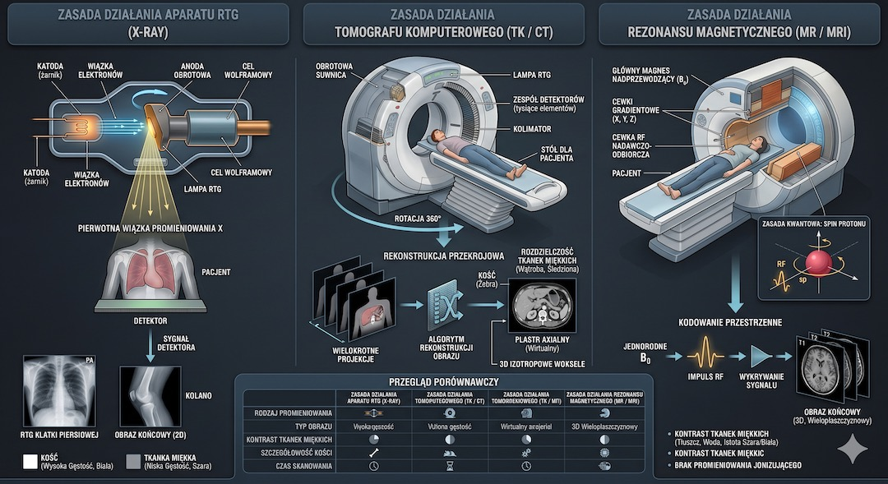
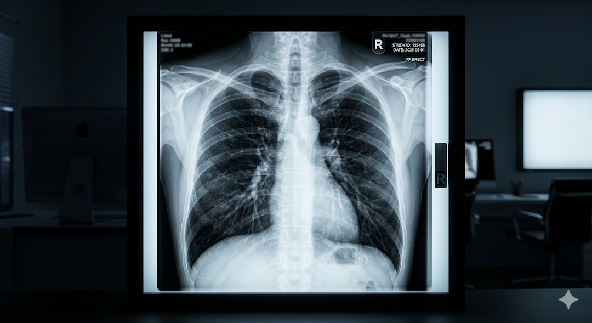
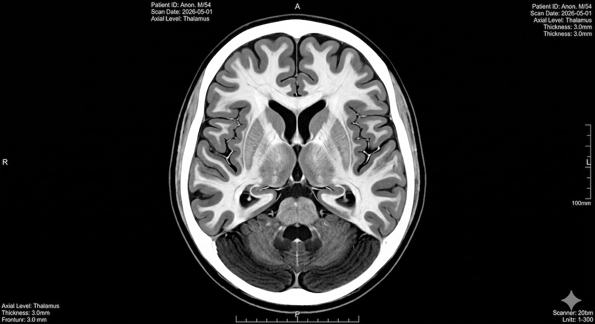
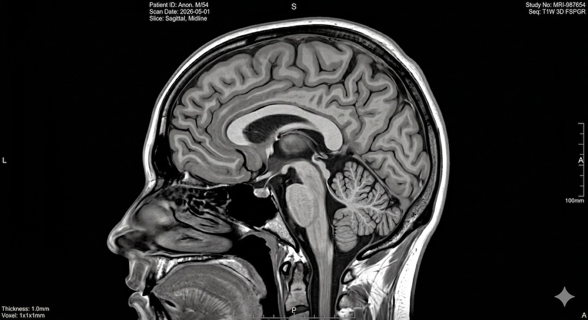
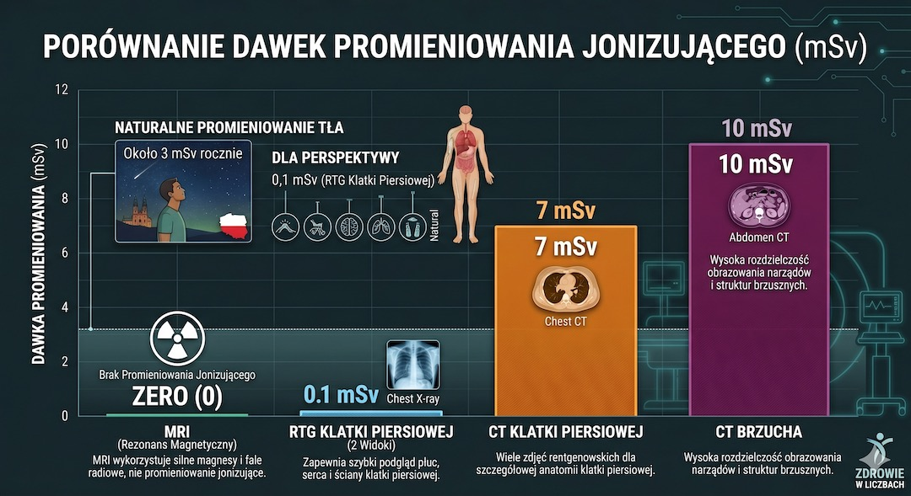
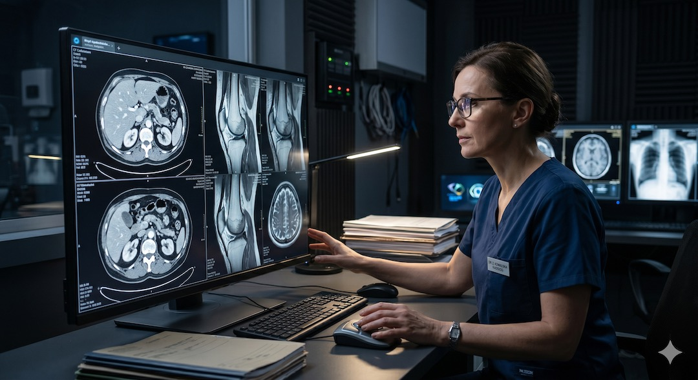
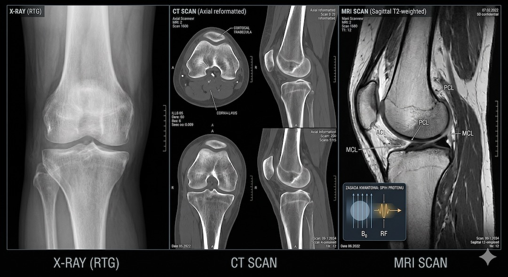
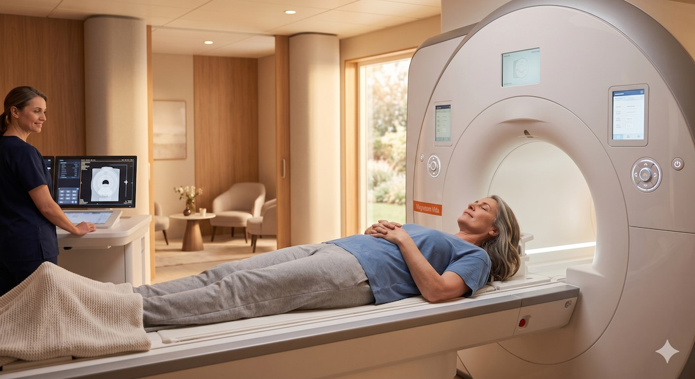

Rentgen, tomografia komputerowa CT i rezonans magnetyczny MRI — trzy badania obrazowe, które lekarz może zlecić tego samego dnia, w tej samej przychodni, w sprawie tego samego problemu. A jednak działają zupełnie inaczej, pokazują różne rzeczy i niosą różne ryzyko. 90% pacjentów nie zna tej różnicy. Po pięćdziesiątce, gdy badania diagnostyczne stają się częścią życia, warto to zmienić.
Szybka odpowiedź
Po 50-tce w temacie „Rentgen, tomografia CT i rezonans MRI — czym się różnią” najlepiej działa plan oparty na danych: najpierw sprawdź punkt wyjścia, potem wdrażaj zmiany krokami przez 4-8 tygodni i kontroluj efekt. Jeśli pojawia się ból, pogorszenie wyników albo brak postępu przez 2-3 tygodnie, zmniejsz obciążenie i
Kluczowe wnioski
Kluczowe wnioski
- Rentgen RTG używa promieniowania jonizującego i najlepiej pokazuje kości — dawka to ok. 0,1 mSv, czyli tyle co 10 dni naturalnego tła radiacyjnego.
- Tomografia CT to wielokrotny rentgen z dawką 2–20 mSv — pokazuje przekroje 3D tkanek miękkich, naczyń i narządów wewnętrznych.
- Rezonans MRI nie używa promieniowania jonizującego — działa na polach magnetycznych i najlepiej obrazuje mózg, rdzeń kręgowy i chrząstki.
- Po 50. roku życia lekarze częściej zlecają CT i MRI niż RTG — zmiany zwyrodnieniowe i nowotwory wymagają dokładniejszego obrazowania.
Czym różnią się rentgen, tomografia CT i rezonans MRI?
Rentgen (RTG), tomografia komputerowa (CT) i rezonans magnetyczny (MRI) to trzy fundamentalnie różne technologie diagnostyczne. Łączy je jedno: wszystkie tworzą obraz wnętrza ciała bez konieczności operacji. Różni je wszystko inne — fizyka, bezpieczeństwo, czas badania i to, co pokazują najlepiej.
Rentgen działa na promieniowaniu jonizującym rentgenowskim (promieniach X), które przechodzi przez ciało i pada na detektor. Gęste struktury — kości i metale — pochłaniają więcej promieni i wypadają jasno. Tkanki miękkie przepuszczają promieniowanie i wypadają ciemno. Efekt: płaski, dwuwymiarowy obraz. Tomografia CT to rentgen wykonany setki razy wokół ciała — komputer składa z tego przekroje i modele 3D. Rezonans MRI nie używa promieniowania jonizującego w ogóle: działa na silnym polu magnetycznym i falach radiowych, które pobudzają atomy wodoru w tkankach do emisji sygnałów. Z tych sygnałów komputer buduje szczegółowy obraz — szczególnie tkanek miękkich.
Zobacz też: Markery krwi po 50-tce.
Ważne jest też to, czego żadne z tych badań nie zastąpi: oceny lekarza. Obraz to narzędzie, nie diagnoza.
- RTG: promieniowanie X, obraz 2D, najlepszy do kości i płuc
- CT: wielokrotny RTG, obraz 3D, najlepszy do narządów i naczyń
- MRI: pole magnetyczne, bez promieniowania, najlepszy do mózgu i chrząstek
- Czas badania: RTG kilka sekund, CT kilka minut, MRI 20–60 minut

Rentgen RTG — jak działa i kiedy go stosują lekarze?
Rentgen to najstarsza i najprostsza technika obrazowania. Promienie X przechodzą przez ciało, a detektor rejestruje różnice pochłaniania. Kości i zwapnienia wychodzą jasno, a tkanki miękkie ciemniej. Dzięki temu RTG pozostaje szybkim badaniem pierwszego wyboru przy urazach i ocenie płuc.
Rentgen jest badaniem z wyboru przy złamaniach, zwichnięciach, ocenie stawów, zmianach w płucach (zapalenie płuc, gruźlica, nowotwory płuca), ocenie serca i aorty oraz przy połkniętych ciałach obcych. Dawka promieniowania jest niska: zdjęcie klatki piersiowej to ok. 0,1 mSv — równowartość 10 dni naturalnego tła promieniowania kosmicznego i ziemskiego, któremu jesteśmy stale poddawani.
Ograniczenie rentgenu to nakładanie się struktur. Na płaskim obrazie 2D żebra zakrywają płuca, a kręgi zasłaniają rdzeń. To właśnie dlatego przy podejrzeniu skomplikowanych zmian lekarz sięga po CT lub MRI. Mimo to rentgen pozostaje pierwszym badaniem w większości ścieżek diagnostycznych — jest szybki, tani i dostępny w każdym szpitalu.
- Wskazania: złamania, płuca, serce, stawy, ciała obce
- Dawka promieniowania: klatka piersiowa 0,1 mSv, kręgosłup lędźwiowy 1,8 mSv
- Czas badania: kilka sekund ekspozycji, wynik w minutach
- Ograniczenia: obraz 2D, słabo widoczne tkanki miękkie i mózg

Tomografia komputerowa CT — kiedy potrzebny jest przekrój 3D ciała?
Tomografia komputerowa (CT) to rentgen wykonywany z wielu kątów wokół pacjenta. Komputer składa ekspozycje w przekroje poprzeczne i modele 3D. Dlatego CT dużo lepiej pokazuje narządy i naczynia niż klasyczne RTG, szczególnie w diagnostyce nagłej i onkologicznej.
CT jest badaniem z wyboru w nagłych przypadkach: udar mózgu (odróżnienie udaru niedokrwiennego od krwotocznego decyduje o leczeniu i musi nastąpić w minutach), urazy wielonarządowe, podejrzenie tętniaka aorty, zatorowość płucna. Doskonale pokazuje narządy jamy brzusznej, naczynia krwionośne po podaniu kontrastu, nowotwory i przerzuty. Badanie trwa 2–10 minut.
Powiązany temat: ApoB i ApoA.
Cena za tę dokładność to wyższa dawka promieniowania niż przy RTG: badanie CT klatki piersiowej to ok. 7 mSv, CT jamy brzusznej ok. 8–10 mSv. Według raportu UNSCEAR z 2020 roku CT odpowiada za ok. 50% całkowitej medycznej dawki promieniowania przy zaledwie 5–10% wykonywanych badań obrazowych. To nie jest powód do paniki — ale powód, żeby CT zlecał lekarz, a nie pacjent na żądanie.
- Wskazania: udar, urazy, nowotwory, naczynia, jama brzuszna, płuca
- Dawka promieniowania: CT klatki 7 mSv, CT brzucha 8–10 mSv
- Czas badania: 2–10 minut, wynik do kilku godzin
- Przewaga nad RTG: obraz 3D, rozróżnianie tkanek miękkich, brak nakładania się struktur

Rezonans magnetyczny MRI — badanie bez promieniowania jonizującego?
Rezonans MRI nie używa promieniowania jonizującego. Silne pole magnetyczne i fale radiowe tworzą bardzo szczegółowy obraz tkanek miękkich, dlatego badanie świetnie sprawdza się w diagnostyce mózgu, rdzenia, stawów i więzadeł. To kluczowa metoda, gdy potrzebna jest wysoka dokładność bez dawki promieniowania.
MRI jest niezastąpiony w obrazowaniu mózgu i rdzenia kręgowego (stwardnienie rozsiane, guzy, udary — po kilku godzinach, gdy CT jest niejednoznaczne), chrząstek i więzadeł (uszkodzenia kolan, kręgosłupa), narządów miednicy (prostata, macica, jajniki) i serca. Nie nadaje się do badań nagłych — trwa 20–60 minut, a pacjent musi leżeć nieruchomo w głośnym tunelu.
Przeciwwskazania do MRI to metalowe implanty ferromagnetyczne: niektóre rozruszniki serca, stare klipy naczyniowe, odłamki metalowe w oczodole. Nowoczesne rozruszniki i endoprotezy stawów są zazwyczaj kompatybilne z MRI — warto mieć dokumentację implantu. Klaustrofobia to problem dla ok. 5–10% pacjentów — dostępne są aparaty otwarte i sedacja.
- Wskazania: mózg, rdzeń, chrząstki, więzadła, prostata, macica, serce
- Promieniowanie: zero — pełne bezpieczeństwo przy wielokrotnych badaniach
- Czas badania: 20–60 minut, wymaga bezruchu
- Przeciwwskazania: metalowe implanty ferromagnetyczne, rozruszniki (starszego typu)

Które badanie obrazowe jest najbezpieczniejsze? Dawki promieniowania w liczbach?
MRI i USG nie wykorzystują promieniowania jonizującego, więc są najbezpieczniejsze pod tym kątem. RTG i CT wiążą się z dawką promieniowania, przy czym CT zwykle jest wyższe. W praktyce bezpieczeństwo zależy od wskazania: właściwie dobrane badanie daje więcej korzyści niż ryzyka.
Dla porównania: naturalne tło promieniowania, któremu każdy z nas jest poddany przez całe życie, wynosi ok. 2,4 mSv rocznie (więcej na wysokościach i w rejonach granitowych). Lot transatlantycki to ok. 0,08 mSv. Zdjęcie RTG klatki piersiowej to 0,1 mSv. CT klatki piersiowej to 7 mSv — czyli tyle co 3 lata naturalnego tła. Według wytycznych Europejskiego Towarzystwa Radiologii (ESR) z 2019 roku ryzyko nowotworowe związane z jednorazowym CT brzucha szacuje się na ok. 1:2000 — marginalnie małe, ale niezerowe, dlatego CT powinno mieć uzasadnienie kliniczne.
Zobacz też: markery krwi a profil ryzyka.
Szczególna ostrożność dotyczy dzieci i kobiet w ciąży — u nich wskazania do CT są węższe, a MRI jest badaniem preferowanym gdy to możliwe. Po 50. roku życia, gdy ryzyko nowotworowe rośnie z innych przyczyn, relacja ryzyko/korzyść z CT jest zazwyczaj bardzo korzystna — jedno właściwie wskazane CT może uratować życie, wykrywając nowotwór we wczesnym stadium.
- MRI: 0 mSv — brak promieniowania jonizującego
- RTG klatki piersiowej: 0,1 mSv — 10 dni naturalnego tła
- RTG kręgosłupa lędźwiowego: 1,8 mSv — ok. 9 miesięcy naturalnego tła
- CT klatki piersiowej: 7 mSv — ok. 3 lata naturalnego tła
- CT jamy brzusznej: 8–10 mSv — ok. 4 lata naturalnego tła

Kiedy lekarz wybiera rentgen, a kiedy CT lub MRI?
Wybór badania obrazowego zależy od trzech czynników: co chcemy zobaczyć, jak pilna jest sytuacja i jakie są przeciwwskazania pacjenta. Istnieją sprawdzone algorytmy decyzyjne — np. wytyczne American College of Radiology (ACR Appropriateness Criteria) — które pomagają lekarzom wybierać właściwe badanie dla konkretnego problemu klinicznego.
Złamanie kości, zapalenie płuc, ciało obce — rentgen, bo szybko, tanio, wystarczająco. Udar mózgu w pierwszych minutach — CT bez kontrastu, bo wyklucza krwotok i jest dostępne całą dobę; MRI jest dokładniejsze, ale trwa za długo w nagłych przypadkach. Ból kolana, podejrzenie uszkodzenia łąkotki — MRI, bo tylko ono pokaże chrząstki i więzadła. Podejrzenie nowotworu jamy brzusznej — CT z kontrastem jako badanie pierwszego rzutu, MRI jako uzupełnienie przy wątpliwościach. Ból głowy bez objawów neurologicznych — często nie wymaga żadnego badania obrazowego.
Przeczytaj też: Badania po 50-tce.
Po 50. roku życia warto wiedzieć, że profilaktyczne CT klatki piersiowej low-dose (niskodawkowe) jest rekomendowane przez NLST (National Lung Screening Trial, 2011) dla palaczy i byłych palaczy w wieku 50–80 lat z wywiadem palenia — redukuje śmiertelność z powodu raka płuca o 20%. To jedna z niewielu sytuacji, gdzie CT bez konkretnego symptomu ma udowodnione korzyści.
- RTG: złamania, płuca, stawy, szybka diagnostyka nagła
- CT: udar (pilny), urazy wielonarządowe, nowotwory, naczynia, jama brzuszna
- MRI: mózg (nienagły), kręgosłup, stawy, chrząstki, prostata, macica
- CT low-dose płuc: skrining u palaczy 50–80 lat — rekomendacja NLST 2011

Co widać na rentgenie, CT i MRI — a czego nie? Praktyczny przewodnik?
RTG dobrze pokazuje kości i ostre urazy, ale słabiej ocenia tkanki miękkie. CT szybko obrazuje narządy, krwawienia i zmiany w klatce piersiowej. MRI najlepiej różnicuje tkanki miękkie, mózg, rdzeń i stawy. Dobór metody powinien wynikać z konkretnego pytania klinicznego.
Rentgen RTG doskonale pokazuje: złamania, zwichnięcia, zmiany struktury kości, pola powietrzne płuc, powiększone serce, duże guzy w płucach, ciała obce metaliczne. Słabo lub wcale nie pokazuje: mózgu i rdzenia kręgowego, chrząstek i więzadeł, wczesnych zmian nowotworowych w tkankach miękkich, zmian zapalnych w jelitach, wczesnego zawału serca.
CT pokazuje doskonale: przekroje wszystkich narządów jamy brzusznej i klatki piersiowej, naczynia krwionośne (z kontrastem), krwawienia wewnątrzczaszkowe, kamicę nerkową i żółciową, zmiany nowotworowe powyżej 5–10 mm. MRI pokazuje doskonale: demielinizację w stwardnieniu rozsianym, guzy mózgu i rdzenia, uszkodzenia chrząstek i więzadeł (kolano, kręgosłup), choroby prostaty, zmiany w macicy i jajnikach, wczesne niedokrwienie mózgu po kilku godzinach od udaru.
- Kości i płuca: RTG wystarczy w większości przypadków
- Mózg nagły (udar, uraz): CT bez kontrastu — szybko, całą dobę
- Mózg i rdzeń (planowy): MRI — największa szczegółowość
- Jama brzuszna, nowotwory: CT z kontrastem jako standard
- Stawy, chrząstki, więzadła: MRI — jedyna technika pokazująca te struktury

Diagnostyka obrazowa po 50. roku życia — co warto wiedzieć i na co uważać?
Po pięćdziesiątce badania obrazowe stają się częstszym elementem życia — i dobrze. Wczesne wykrycie zmiany nowotworowej, tętniaka aorty czy demielinizacji w rezonansie ratuje życie i zdrowie. Jednocześnie warto rozumieć, co lekarz zleca i dlaczego, żeby być świadomym uczestnikiem procesu diagnostycznego, a nie tylko biernym obserwatorem.
Sprawdź również: jak czytać markery krwi oraz dział Zdrowie.
Kilka konkretnych faktów dla osób po 50. : Tętniak aorty brzusznej dotyka ok. 5% mężczyzn po 65. roku życia — jednorazowe USG skriningowe rekomenduje się wszystkim palącym mężczyznom między 65. a 75. rokiem życia (wytyczne US Preventive Services Task Force 2019). Rak płuca: CT low-dose skriningowe dla palaczy i byłych palaczy 50–80 lat zmniejsza śmiertelność o 20% (badanie NLST 2011, 53 000 uczestników). Gęstość kości: densytometria DXA to osobna technika (nie RTG/CT/MRI) — rekomendowana kobietom po menopauzie i mężczyznom po 70. roku życia.
Zastrzeżenie medyczne: Ten artykuł ma charakter edukacyjny. Decyzja o wykonaniu badania obrazowego należy wyłącznie do lekarza na podstawie objawów i historii choroby. Nie zlecaj sobie badań CT na własną rękę — poza uzasadnionym wskazaniem medycznym dawka promieniowania przynosi więcej szkody niż pożytku. Przy niepokojących objawach — konsultacja lekarska, nie samodzielna diagnostyka.
- USG aorty skriningowe: palący mężczyźni 65–75 lat — jednorazowo
- CT płuc low-dose: palacze i byli palacze 50–80 lat — co rok
- Densytometria DXA: kobiety po menopauzie, mężczyźni po 70. roku życia
- Kolonoskopia: od 45. roku życia co 10 lat — wykrywa raka jelita grubego

Najczęściej zadawane pytania?
Najcz ciej zadawane pytania
Czym różni się rentgen od tomografii CT?
RTG daje szybki obraz 2D i najlepiej ocenia kości oraz płuca. CT tworzy przekroje 3D, więc dokładniej pokazuje narządy i naczynia. W praktyce CT bywa kluczowe w stanach nagłych, ale wiąże się z wyższą dawką promieniowania niż klasyczny rentgen.
Warto przeczytać też: trening siłowy, dieta po 50-tce, sen i regeneracja, badania krwi.
Powiązane tematy: trening siłowy, dieta po 50-tce, sen i regeneracja, suplementacja.
Powiązane tematy: trening siłowy, dieta po 50-tce, sen i regeneracja, suplementacja.
Czy rezonans MRI jest bezpieczniejszy niż CT?
Tak, pod względem promieniowania MRI jest całkowicie bezpieczny — nie emituje promieniowania jonizującego w ogóle. CT wiąże się z dawką 7–10 mSv na badanie. MRI jest preferowany wszędzie tam, gdzie nie ma potrzeby pilności, szczególnie u dzieci, kobiet w ciąży i przy wielokrotnych badaniach. Przeciwwskazaniem do MRI są niektóre metalowe implanty ferromagnetyczne.
Kiedy lekarz zleca MRI zamiast CT?
MRI jest badaniem z wyboru przy problemach z mózgiem i rdzeniem kręgowym (stwardnienie rozsiane, guzy, nieostre zmiany po udarze), uszkodzeniach chrząstek i więzadeł (kolano, kręgosłup), diagnostyce prostaty, macicy i jajników. CT jest preferowane w nagłych przypadkach, przy urazach i podejrzeniu nowotworów jamy brzusznej, bo jest szybsze i dostępne całą dobę.
Jak duże jest ryzyko promieniowania przy tomografii CT?
CT klatki piersiowej to ok. 7 mSv — równowartość ok. 3 lat naturalnego tła promieniowania. Według ESR ryzyko nowotworowe po jednorazowym CT brzucha szacuje się na ok. 1:2000. Przy uzasadnionym wskazaniu medycznym korzyść diagnostyczna wielokrotnie przeważa to ryzyko. Nie należy jednak wykonywać CT profilaktycznie bez wskazania lekarskiego.
Czy można mieć MRI z endoprotezą stawu?
Zazwyczaj tak. Nowoczesne endoprotezy stawów biodrowych i kolanowych są wykonane z materiałów kompatybilnych z MRI. Warto mieć przy sobie dokumentację implantu (kartę wszczepienia) — zawiera informację o kompatybilności z polem magnetycznym. Stare metalowe implanty ferromagnetyczne oraz niektóre rozruszniki serca mogą być przeciwwskazaniem — decyzja należy do radiologa.
Ile trwa badanie CT i MRI?
Badanie CT trwa zwykle 2–10 minut — sam skan to często kilkadziesiąt sekund, reszta to przygotowanie i ewentualne podanie kontrastu. MRI trwa znacznie dłużej: od 20 do 60 minut w zależności od badanej okolicy i protokołu. W czasie MRI pacjent musi leżeć nieruchomo w głośnym tunelu — to bywa trudne przy klaustrofobii lub bólu.
Źródła?
To dobry moment, żeby spojrzeć na temat szerzej i przełożyć teorię na codzienne decyzje. Najwięcej zyskujesz wtedy, gdy rozumiesz mechanizm, umiesz ocenić ryzyko i wybierasz rozwiązania, które realnie wspierają zdrowie oraz regularność po pięćdziesiątce.
Źródła po 50-tce warto wdrażać krok po kroku i od razu łączyć teorię z praktyką. Dzięki temu łatwiej utrzymać regularność, poprawić bezpieczeństwo działań i szybciej zauważyć trwałe efekty zdrowotne w codziennym życiu.
- Radiological Society of North America. (2023). Radiation Dose in X-Ray and CT Examinations. RadiologyInfo.org.
- American College of Radiology. (2024). ACR Appropriateness Criteria. American College of Radiology.
- National Lung Screening Trial Research Team. (2011). Reduced lung-cancer mortality with low-dose computed tomographic screening. New England Journal of Medicine, 365(5), 395–409.
- European Society of Radiology. (2019). Patient radiation exposure monitoring: a booklet for patients. ESR.
- United Nations Scientific Committee on the Effects of Atomic Radiation. (2020). UNSCEAR 2020/2021 Report. Sources, Effects and Risks of Ionizing Radiation.
- US Preventive Services Task Force. (2019). Abdominal Aortic Aneurysm: Screening. USPSTF Recommendation Statement.
- Bushberg J.T., Seibert J.A., Leidholdt E.M., Boone J.M. (2020). The Essential Physics of Medical Imaging (4th ed.). Wolters Kluwer.
- Kanal E., Barkovich A.J., Bell C. et al. (2013). ACR guidance document on MR safe practices. Journal of Magnetic Resonance Imaging, 37(3), 501–530.
- Brenner D.J., Hall E.J. (2007). Computed Tomography — An Increasing Source of Radiation Exposure. New England Journal of Medicine, 357, 2277–2284.
Uwaga: Artykuł ma charakter informacyjny i edukacyjny. Nie zastępuje konsultacji lekarskiej, diagnozy ani leczenia.